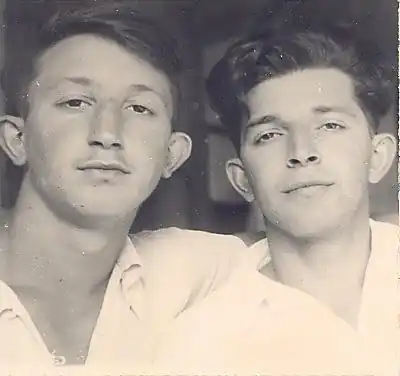
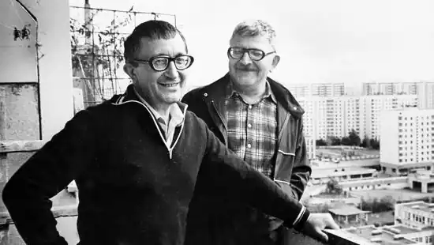
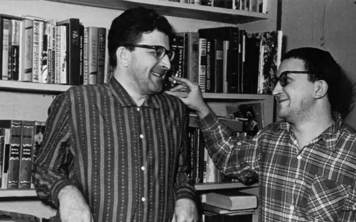

")



Брати Стругацькі є досить унікальними особистостями російської літератури. Тому біографія братів цікава багатьом. Звичайно ж, біографія Стругацьких наповнена тими подіями, які стрясали світ у роки їхньої молодості. Отже, брати Стругацькі, біографія. Що ж ми можемо дізнатися про них?
Брати Стругацькі, біографії яких були досить різними, є талановитими письменниками-фантастами, які зуміли розповісти читачам те, про що в радянському Союзі не прийнято було говорити. Їх біографія почалася ще в першій половині двадцятого століття. Тоді Стругацькі жили в Ленінграді. Брати мають вісім років різниці. Але, не дивлячись на це, Стругацькі завжди були дружною сім'єю. Брати, яких розлучала життя, незмінно знову поверталися назад. Отже, яка ж біографія цих чудових драматургів, прозаїків, справжніх геніїв радянської наукової фантастики? Як вони творили книги, щоб стати найвідомішими російськими фантастами, як у ближньому, так і в далекому зарубіжжі? Чому їх називають практично отцями наукової Фантастики, особливо радянської і, надалі, російської? Чому їхні праці важко переоцінити, а ще складніше уявити світ наукової фантастики без братів Стругацьких.
Старший брат — Аркадій Натанович Стругацький. Він з'явився на світ 28 серпня 1925 року в місті Батумі. Незабаром його батьки переїхали до Ленінграда, де і залишалися до кінця життя. Батьки у братів Стругацьких були освіченими і інтелігентними людьми. Батько був за професією мистецтвознавцем, а мама — вчителькою. Коли почалася війна, Аркадій вже був підлітком, тому працював на будівництві укріплень, які повинні були захистити місто від німецьких загарбників. Потім хлопець віддавав борг Батьківщині в Гранатний майстерні. У 1942 році, коли Ленінград був у блокаді, Аркадію вдалося евакуюватися разом з батьком, але у вагон потрапив розряд і він єдиний вижив серед усіх, хто там перебував. Звичайно ж, для хлопця це був удар, але в той час ніколи було довго плакати і переживати. Він поховав батька в місті Вологді. Потім поїхав в Чкалов (сучасний Оренбург), а потім опинився у Ташлі. Там він працював на пункті прийому молока, а в 1943 році був призваний в армію. Аркадій закінчив Актюбінське артучилище, але на фронт так і не потрапив. Хлопцеві дуже пощастило, оскільки замість того, щоб воювати, навесні 1943 року його відрядили до Москви, де він повинен був вчитися у військовому інституті іноземних мов. Цей навчальний заклад хлопець закінчив у 1949 році. Він був перекладачем з англійської та японської мов. Потім потрапив викладачем в Каннську школу військових перекладачів. Завдяки своїй спеціальності, старшому з братів Стругацьких доводилося багато подорожувати. Він встиг відслужити військовим перекладачем на Далекому Сході і демобілізувався лише в 1955 році. З того часу аркадий зайнявся письменницькою діяльністю. Крім створінь романів і повістей, у співавторстві зі своїм братом, він також працював в "рефератних журналі", а потім став редактором в Детгизе і Госполітіздат. На жаль, аркадий Стругацький прожив лише шістдесят шість років. Для такого талановитого письменника це досить маленький термін, за який неможливо втілити в життя всі ті ідеї та теми, які приходять в голову. Звичайно ж, Аркадій, разом зі своїм братом, створили безліч унікальних розповідей, якими зачитується вже кілька поколінь. Але, все ж, варто зазначити, що ми мали б ще більше прекрасних прикладів наукової фантастики, якби життя Аркадія Натановича Стругацького не обірвалася 12 жовтня 1991. А ось його молодший брат, Борис Натанович Стругацький, живе і процвітає по сьогоднішній день. Борис народився 15 квітня 1933 року. Батьки братів на той час уже жили в Ленінграді, тому Борис міг вважати себе корінним жителем цього міста. Він також, як і брат, був евакуйований з блокадного Ленінграда, але тільки іншим поїздом, разом з мамою. Будучи дитиною, він встиг побачити найстрашнішу зиму блокадного Ленінграда. Після того, як війна закінчилася, повернувся в рідне місто. Там він вступив до ЛГУ на механіко-математичний факультет і отримав диплом астронома. Свого часу Борис працював у Пулковської обсерваторії. Але, після того, як брат повернувся з Далекого Сходу, Стругацькі відправили на задній план свої кар'єри і почали активно займатися творчістю. Тому, вже в 1960 році, Борис був членом Спілки Письменників. До речі, брати не тільки писали свої розповіді і романи, але і переводили американську наукову фантастику. От тільки під перекладами вони підписувалися не як Стругацькі, а як С. Победин і С. Витин. На сьогоднішній день Борис Стругацький є керівником семінару молодих фантастів при Санкт-Петербурзької письменницької організації. Він передає молодому поколінню свої знання та вміння в цій галузі літератури, щоб і сучасні фантасти могли створювати настільки ж сильні й цікаві твори, як в сові час створювали вони зі старшим братом. До речі, успіх до Стругацким прийшов досить швидко. Уже в 1960 році були відзначені такі твори, як "Шість сірників" (1959 рік), "Випробування СКР" (1960 рік), "Приватні припущення" (1960 рік). Особливістю Стругацьких був глибокий психологізм персонажів. Раніше радянські фантасти не особливо-то замислювалися над тим, щоб створювати повноцінних персонажів зі своїми проблемами і переживаннями. А Стругацькі наділили їх почуттями та емоціями, дали можливість пояснювати, чому саме вони так чинять і що їм подобається чи не подобається в їхньому світі. Крім того, Стругацькі стали прогнозувати світ майбутнього, про який також не замислювалися радянські фантасти, на відміну від закордонних. Вони написали такі шедеври, як "Пікнік на узбіччі" і "Залюднений острів". Ці кілька антіутопічние книги можна сміливо називати шедеврами. А брати Стругацькі по праву звуться королями наукової фантастики.